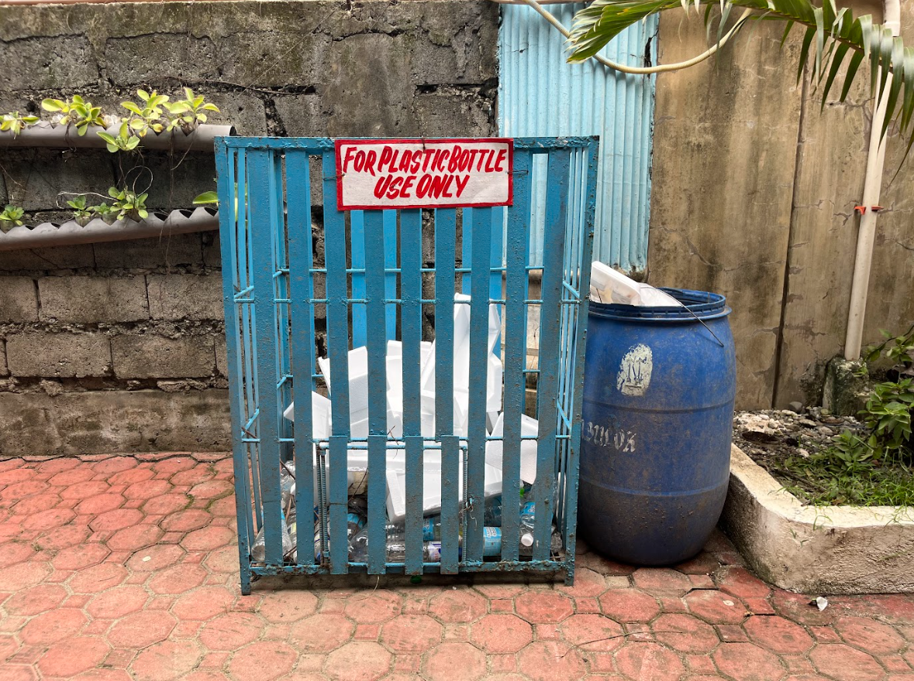
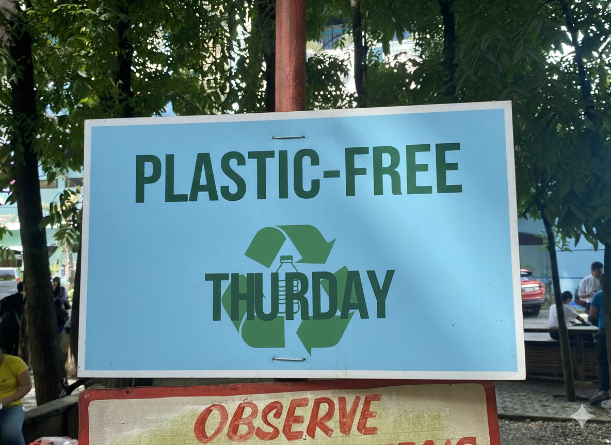
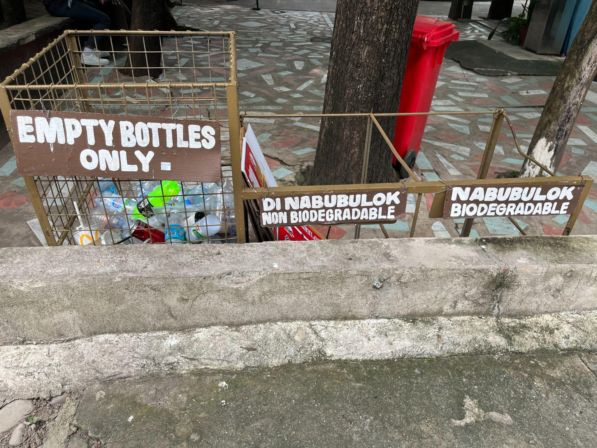

Urdaneta City University (UCU) actively advances campus-wide sustainability initiatives focused on reducing paper and plastic consumption, in alignment with the UI GreenMetric World University Rankings, particularly under the Waste (WS), Education & Research (ED), and Setting & Infrastructure (SI) indicators. These initiatives demonstrate the University’s institutional commitment to environmental stewardship, resource efficiency, and sustainable campus operations.
| Campus Paper & Plastic Reduction Initiatives | |
|---|---|
|
 Official banner for UCU Plastic-Free Thursdays campaign
|
 Zero plastic bottle waste guide
|
To address paper waste, UCU has institutionalized a paperless system through the digitalization of academic and administrative processes. This includes the online submission of coursework, use of learning management systems, electronic communication, and digital recordkeeping. These measures significantly reduce paper consumption while improving efficiency, accessibility, and data management. The transition to digital platforms directly contributes to waste minimization and supports low-carbon campus operations, consistent with GreenMetric’s sustainability framework.
In response to plastic pollution, UCU implements its comprehensive Waste Reduction and Recycling Program, anchored in its Sustainable Development Goals (SDG) Action Plan. The program promotes behavioral change and resource conservation by discouraging the use of single-use plastics and encouraging the adoption of reusable alternatives such as tumblers, food containers, and eco-bags. These practices are reinforced during campus events, student activities, and daily operations, ensuring consistent application across the university community.
A key flagship initiative, “Plastic-Free Thursday,” serves as a weekly sustainability campaign that challenges students, faculty, and staff to eliminate single-use plastics every Thursday. This initiative fosters environmental discipline, strengthens awareness, and cultivates long-term sustainable habits. It also functions as a participatory platform for sustainability education, encouraging collective responsibility and engagement across stakeholders.
Ten university programs that align with the Sustainable Development Goals (SDGs) under the theme “Program to Reduce the Use of Paper and Plastic on Campus”:
Transition administrative processes, student services, and academic transactions to digital platforms.
Encourage students and employees to bring reusable tumblers, food containers, utensils, and eco-bags.
Eliminate single-use plastics in cafeterias, offices, meetings, and university events.
Promote e-books, Learning Management Systems (LMS), online examinations, and electronic submissions.
Purchase recycled paper, biodegradable packaging, refillable office supplies, and eco-friendly products.
Install segregation bins and recycling stations for paper, plastics, and other recyclable materials.
Default double-sided printing, set printing quotas, and encourage digital document sharing.
Recognize colleges and offices that significantly reduce paper and plastic consumption through sustainable office practices.
Conduct seminars, webinars, orientations, and student-led campaigns promoting responsible consumption and waste reduction.
Organize annual competitions among colleges and offices to reduce paper use, eliminate single-use plastics, and improve recycling rates.
These ten programs collectively support:
These initiatives primarily advance SDG 12 (Responsible Consumption and Production) while contributing to 11 Sustainable Development Goals through sustainable campus operations and environmental stewardship.
| Additional Campus Waste Reduction Banners & Evidences | |
|---|---|
|
 |
|